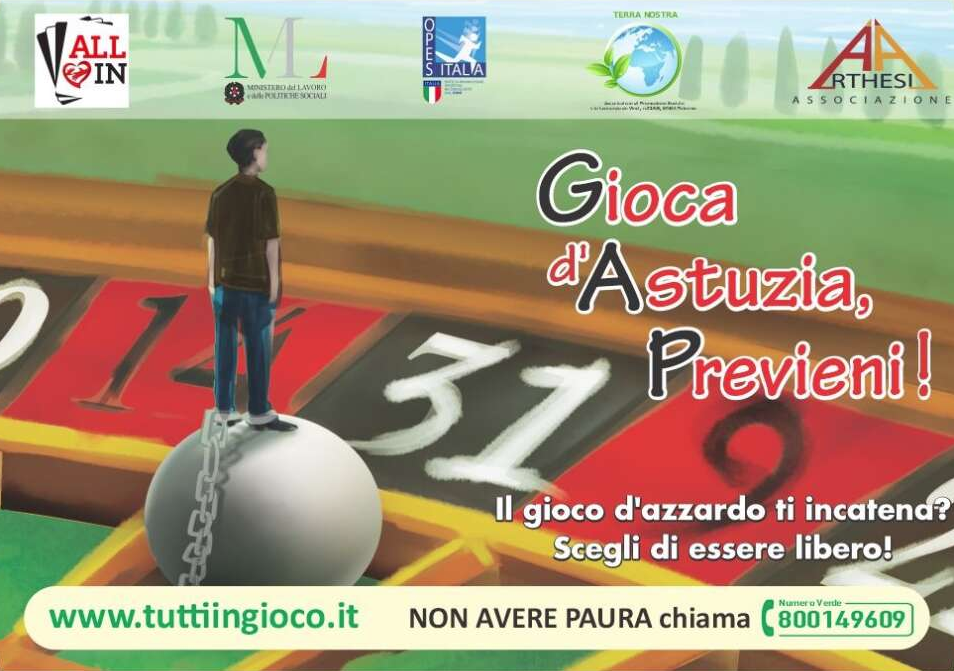
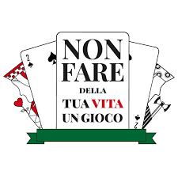

Il progetto “ALL IN TUTTI IN GIOCO”, finanziato dal Ministero del Lavoro e delle Politiche Sociali, è un'iniziativa di sensibilizzazione contro la ludopatia. Realizzato dall'Associazione Terra Nostra, OPES Italia e ARTHESIA, ha l’obiettivo di contrastare il fenomeno del gioco d'azzardo patologico, promuovendo consapevolezza e prevenzione.
La campagna mira a informare il pubblico sui rischi legati alla ludopatia e a sensibilizzare su come questa dipendenza possa danneggiare individui, famiglie e comunità. Le attività comprendono eventi, formazione e comunicazione per prevenire la diffusione del problema e per offrire supporto a chi ne è già colpito.
L'iniziativa vuole creare una cultura di maggiore consapevolezza, affinché il gioco d'azzardo non venga visto come una soluzione, ma come una potenziale minaccia per la salute mentale e sociale.

Il progetto "Non fare della tua vita un gioco" si propone di sensibilizzare i giovani, in particolare quelli tra i 15 e i 25 anni, riguardo i rischi legati al gioco d'azzardo, enfatizzando invece i valori positivi dello sport come lealtà, correttezza, rispetto delle regole e sacrificio.
L'iniziativa mira a promuovere un approccio più responsabile e consapevole alle attività ludiche.
Oltre a una campagna di comunicazione e a un sito web informativo, il progetto include percorsi esperienziali che permettono ai partecipanti di riflettere sugli effetti negativi del gioco d'azzardo, confrontandoli con i benefici di un gioco sano e moderato.
L'iniziativa include anche una helpline per supporto ai giovani con possibili problemi di dipendenza e un contest su Instagram per coinvolgere i ragazzi in modo creativo. Questi eventi si terranno in diverse città italiane, tra cui Milano, Roma e Cagliari
